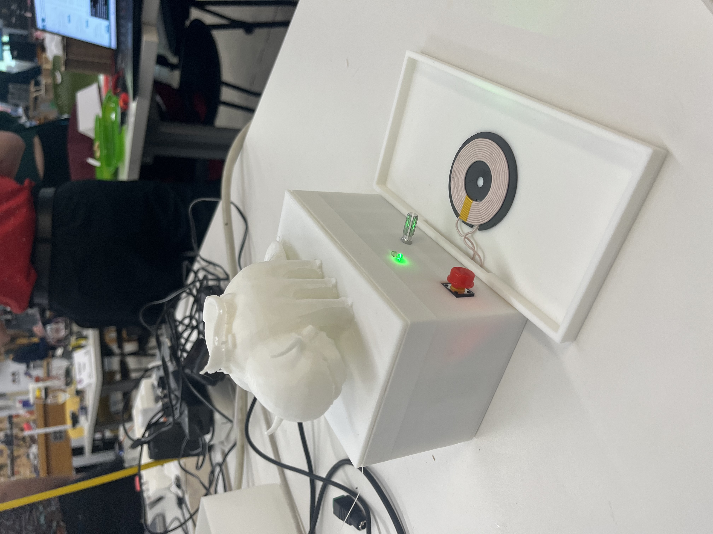
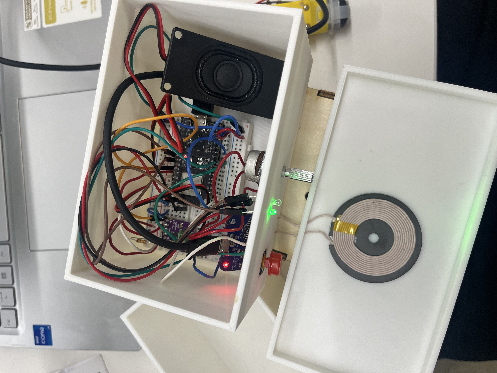
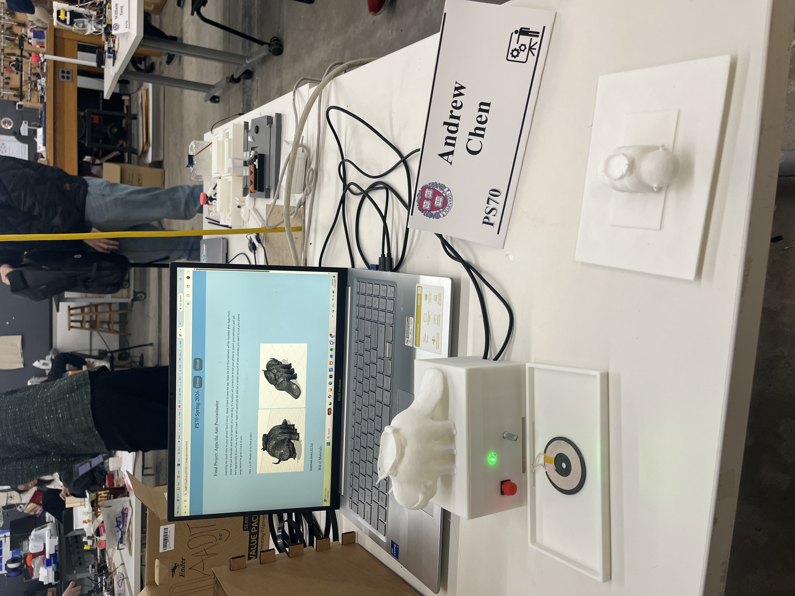

<div class="textcontainer">
<p class="margin"></p>
<h3>Final Project: Appa the Anti Procrastinator</h3>
<p class = "margin"></p>
Spending too much time on your phone? Don't worry - Appa is here to save the day. Appa the Anti Procrastinator will be modeled after Appa from Avatar the Last Airbender and be your companion on your journey to having less screentime. It's function will primarily be to lock your phone away to prvent procrastination and will roar aggressively at you if you try to take it back. Appa is able set a certain amount of time whereby you want to lock your phone away before he gives it back to you.
<p class = "margin"></p>
<p class="margin"> </p>
Here is my final demo:
<p class="margin"> </p>
<video controls style="max-width:50%; margin: 1rem 0; border-radius: 8px;">
<source src="finaldemo.mov" type="video/mp4">
Your browser does not support the video tag.
</video>
<p class="margin"> </p>
<p class = "margin"></p>
Once the phone is put on the pad, the wireless charger begins to charge the phone while also detecting that it is laid down. After being detected, the LED turns red and the phone is now locked in place and the timer starts ticking. The time can be adjusted through the potentiometer. If the phone is taken from its locked spot before the timer is done then the red LED will begin flashing and Appa will begin to nonstop roaring at you. There will be no other choice for you but to put your phone back down and return to your work. After the timer has been complete, the LED will turn green again and a quick jingle will play. The timer will not start again until the phone is first picked up and put back down. And with that, Appa has cured all of our phone addictions!
<p class = "margin"></p>
<p class = "margin"></p>
Here is a 3D Model of my final project:
<p class = "margin"></p>
<p class = "margin"></p>
<image style = "width: 40%"src = "appa_front.jpg" alt = "front"> </image>
<image style = "width: 40%"src = "appa_back.jpg" alt = "back"> </image>
<p class = "margin"></p>
<a href="C:\Users\andre\OneDrive\Documents\GitHub\PS70\13_finalproject\front_appa.stl" download>Download Appa's STL File</a>
<p class = "margin"></p>
<h4>Bill of Materials:</h4>
<p class = "margin"></p>
<p class = "margin"></p>
1. ESP32 Mini (microcontroller)
<p class = "margin"></p>
2. Qi Wireless Charger (phone detection)
<p class = "margin"></p>
3. Speaker (plays roar sound)
<p class = "margin"></p>
4. Amplifier (increases speaker noise)
<p class = "margin"></p>
5. Red & Green LED
<p class = "margin"></p>
6. Potentiometer (adjusts timer)
<p class = "margin"></p>
7. Button (reset)
<p class = "margin"></p>
<p class = "margin"></p>
<h4>Timeline:</h4>
<p class = "margin"></p>
<p class = "margin"></p>
April 5th: Electronic component working
- Phone detection + Audio file playing +Timer activated
<p class = "margin"></p>
April 12th
- 3D model printed + Adjust as necessary
<p class = "margin"></p>
April 19th
- Full demo working
<p class = "margin"></p>
April 23rd
- Final touches
<p class = "margin"></p>
<p class="margin"> </p>
Here is what the final product looks like:
<p class="margin"> </p>
<p></p>
<p class="margin"> </p>
<p class="margin"> </p>
Opened up here is the inside wiring, a little messy but works!:
<p class="margin"> </p>
<p></p>
<p class="margin"> </p>
<p class="margin"> </p>
Here is my final presentation set up! So much fun presenting to all our guests:
<p class="margin"> </p>
<p></p>
<p class="margin"> </p>
<p class="margin"> </p>
Here is the long code for my project:
<p class="margin"> </p>
<p class="margin"> </p>
<h4>Code:</h4>
<pre class="codebox"><code>
```cpp
#include "appa_roar_1.h"
#include "driver/i2s_std.h"
#include <pgmspace.h>
#include <math.h>
// ── Pins ──────────────────────────────────────
#define I2S_DOUT 21
#define I2S_BCLK 22
#define I2S_LRC 19
#define RED_LED 5
#define GREEN_LED 18
#define QI_PIN 33
#define RESET_BUTTON 32
#define POT_PIN 35
// ── Qi detection ─────────────────────────────
#define PHONE_DETECT_THRESHOLD 3800
#define PHONE_REMOVE_THRESHOLD 3900
#define STABLE_READINGS_NEEDED 10
// ── Timer ─────────────────────────────────────
#define FOCUS_MIN_MS 5000
#define FOCUS_MAX_MS 120000
#define GRACE_PERIOD_MS 1000
// ── Reset debounce ────────────────────────────
#define RESET_DEBOUNCE_MS 800
// ─────────────────────────────────────────────
// Non-blocking audio engine
// ─────────────────────────────────────────────
struct ToneStep {
int freq;
int durationMs;
};
const ToneStep successSteps[] = {
{ 900, 100 },
{ 0, 60 },
{ 1300, 140 },
{ 0, 250 },
};
const int successStepCount = 4;
const ToneStep* currentSound = nullptr;
int currentStepCount = 0;
int currentStep = 0;
int currentSample = 0;
bool soundDone = false;
// ─────────────────────────────────────────────
// State machine
// ─────────────────────────────────────────────
enum State {
WAITING,
RUNNING,
ALARM,
COMPLETE,
WAIT_FOR_REMOVAL
};
State state = WAITING;
// ─────────────────────────────────────────────
// Global variables
// ─────────────────────────────────────────────
unsigned long focusDuration = 5000;
unsigned long elapsedTime = 0;
unsigned long lastTick = 0;
unsigned long timerStartMoment = 0;
int alarmAudioIndex = 0;
bool phoneState = false;
int phoneStableCount = 0;
int noPhoneStableCount = 0;
unsigned long lastRedFlash = 0;
bool redFlashState = false;
unsigned long lastResetPress = 0;
i2s_chan_handle_t tx_handle;
// ─────────────────────────────────────────────
// Forward declarations
// ─────────────────────────────────────────────
bool readPhone();
void setupI2S();
void flushAudio();
void startSound(const ToneStep* steps, int count);
void stopSound();
void stepAudio();
void writeOneRoarSample();
void updateFocusDurationFromPot();
void forcePhoneRemoved();
void resetSystem();
// ─────────────────────────────────────────────
// I2S setup
// ─────────────────────────────────────────────
void setupI2S() {
i2s_chan_config_t chan_cfg =
I2S_CHANNEL_DEFAULT_CONFIG(I2S_NUM_0, I2S_ROLE_MASTER);
i2s_new_channel(&chan_cfg, &tx_handle, NULL);
i2s_std_config_t std_cfg = {
.clk_cfg = I2S_STD_CLK_DEFAULT_CONFIG(8000),
.slot_cfg = I2S_STD_MSB_SLOT_DEFAULT_CONFIG(
I2S_DATA_BIT_WIDTH_16BIT,
I2S_SLOT_MODE_MONO),
.gpio_cfg = {
.mclk = I2S_GPIO_UNUSED,
.bclk = (gpio_num_t)I2S_BCLK,
.ws = (gpio_num_t)I2S_LRC,
.dout = (gpio_num_t)I2S_DOUT,
.din = I2S_GPIO_UNUSED,
.invert_flags = {
.mclk_inv = false,
.bclk_inv = false,
.ws_inv = false,
},
},
};
i2s_channel_init_std_mode(tx_handle, &std_cfg);
i2s_channel_enable(tx_handle);
}
// ─────────────────────────────────────────────
// Audio engine
// ─────────────────────────────────────────────
void flushAudio() {
int16_t silence = 0;
size_t bytesWritten;
for (int i = 0; i < 2048; i++) {
i2s_channel_write(tx_handle, &silence, sizeof(silence),
&bytesWritten, 0);
}
}
void startSound(const ToneStep* steps, int count) {
currentSound = steps;
currentStepCount = count;
currentStep = 0;
currentSample = 0;
soundDone = false;
}
void stopSound() {
currentSound = nullptr;
soundDone = true;
flushAudio();
}
void stepAudio() {
if (currentSound == nullptr) {
int16_t silence = 0;
size_t bytesWritten;
i2s_channel_write(tx_handle, &silence, sizeof(silence),
&bytesWritten, portMAX_DELAY);
return;
}
if (currentStep >= currentStepCount) {
soundDone = true;
currentSound = nullptr;
return;
}
const ToneStep& step = currentSound[currentStep];
int totalSamples = 8000 * step.durationMs / 1000;
int16_t sample;
if (step.freq == 0) {
sample = 0;
} else {
float t = (float)currentSample / 8000.0f;
sample = (int16_t)(sinf(2.0f * PI * step.freq * t) * 9000);
}
size_t bytesWritten;
i2s_channel_write(tx_handle, &sample, sizeof(sample),
&bytesWritten, portMAX_DELAY);
currentSample++;
if (currentSample >= totalSamples) {
currentSample = 0;
currentStep++;
}
}
void writeOneRoarSample() {
uint8_t raw = pgm_read_byte(&appaRoar630[alarmAudioIndex]);
int16_t sample = ((int16_t)raw - 128) << 8;
size_t bytesWritten;
i2s_channel_write(tx_handle, &sample, sizeof(sample),
&bytesWritten, portMAX_DELAY);
alarmAudioIndex++;
if (alarmAudioIndex >= appaRoar630_length) {
alarmAudioIndex = 0;
}
}
// ─────────────────────────────────────────────
// Phone detection
// ─────────────────────────────────────────────
bool readPhone() {
int val = analogRead(QI_PIN);
if (val < PHONE_DETECT_THRESHOLD) {
phoneStableCount++;
noPhoneStableCount = 0;
} else if (val > PHONE_REMOVE_THRESHOLD) {
noPhoneStableCount++;
phoneStableCount = 0;
}
if (phoneStableCount >= STABLE_READINGS_NEEDED) phoneState = true;
if (noPhoneStableCount >= STABLE_READINGS_NEEDED) phoneState = false;
return phoneState;
}
void forcePhoneRemoved() {
phoneState = false;
phoneStableCount = 0;
noPhoneStableCount = STABLE_READINGS_NEEDED;
}
// ─────────────────────────────────────────────
// Potentiometer
// ─────────────────────────────────────────────
void updateFocusDurationFromPot() {
int raw = analogRead(POT_PIN);
focusDuration = map(raw, 0, 4095, FOCUS_MIN_MS, FOCUS_MAX_MS);
}
// ─────────────────────────────────────────────
// Reset
// ─────────────────────────────────────────────
void resetSystem() {
elapsedTime = 0;
alarmAudioIndex = 0;
redFlashState = false;
stopSound();
forcePhoneRemoved();
digitalWrite(RED_LED, LOW);
digitalWrite(GREEN_LED, HIGH);
state = WAIT_FOR_REMOVAL;
Serial.println("[STATE] WAIT_FOR_REMOVAL");
}
// ─────────────────────────────────────────────
// Setup
// ─────────────────────────────────────────────
void setup() {
Serial.begin(115200);
pinMode(RED_LED, OUTPUT);
pinMode(GREEN_LED, OUTPUT);
pinMode(RESET_BUTTON, INPUT_PULLUP);
digitalWrite(RED_LED, LOW);
digitalWrite(GREEN_LED, HIGH);
setupI2S();
Serial.println("Ready.");
Serial.println("[STATE] WAITING");
}
// ─────────────────────────────────────────────
// Loop
// ─────────────────────────────────────────────
void loop() {
bool phone = readPhone();
unsigned long now = millis();
// Reset button — debounced
if (digitalRead(RESET_BUTTON) == LOW &&
now - lastResetPress > RESET_DEBOUNCE_MS) {
lastResetPress = now;
resetSystem();
return;
}
switch (state) {
// ── WAITING ───────────────────────────────
case WAITING:
digitalWrite(RED_LED, LOW);
digitalWrite(GREEN_LED, HIGH);
updateFocusDurationFromPot();
stepAudio();
if (phone) {
elapsedTime = 0;
lastTick = now;
timerStartMoment = now;
stopSound();
state = RUNNING;
Serial.println("[STATE] RUNNING");
}
break;
// ── RUNNING ───────────────────────────────
case RUNNING:
digitalWrite(GREEN_LED, LOW);
if (phone) {
digitalWrite(RED_LED, HIGH);
elapsedTime += now - lastTick;
lastTick = now;
} else {
if (now - lastRedFlash >= 300) {
lastRedFlash = now;
redFlashState = !redFlashState;
digitalWrite(RED_LED, redFlashState);
}
}
stepAudio();
if (!phone && (now - timerStartMoment > GRACE_PERIOD_MS)) {
alarmAudioIndex = 0;
stopSound();
state = ALARM;
Serial.println("[STATE] ALARM");
break;
}
if (elapsedTime >= focusDuration) {
digitalWrite(RED_LED, LOW);
digitalWrite(GREEN_LED, LOW);
for (int i = 0; i < 2; i++) {
digitalWrite(GREEN_LED, HIGH); delay(200);
digitalWrite(GREEN_LED, LOW); delay(200);
}
digitalWrite(GREEN_LED, HIGH);
startSound(successSteps, successStepCount);
state = COMPLETE;
Serial.println("[STATE] COMPLETE");
}
break;
// ── ALARM ─────────────────────────────────
case ALARM:
digitalWrite(GREEN_LED, LOW);
if (now - lastRedFlash >= 300) {
lastRedFlash = now;
redFlashState = !redFlashState;
digitalWrite(RED_LED, redFlashState);
}
if (phone) {
stopSound();
alarmAudioIndex = 0;
lastTick = now;
digitalWrite(RED_LED, HIGH);
state = RUNNING;
Serial.println("[STATE] RUNNING (resumed)");
break;
}
writeOneRoarSample();
break;
// ── COMPLETE ──────────────────────────────
case COMPLETE:
digitalWrite(RED_LED, LOW);
digitalWrite(GREEN_LED, HIGH);
stepAudio();
if (soundDone && !phone) {
forcePhoneRemoved();
soundDone = false;
state = WAIT_FOR_REMOVAL;
Serial.println("[STATE] WAIT_FOR_REMOVAL");
}
break;
// ── WAIT_FOR_REMOVAL ──────────────────────
case WAIT_FOR_REMOVAL:
digitalWrite(RED_LED, LOW);
digitalWrite(GREEN_LED, HIGH);
stepAudio();
if (!phone) {
forcePhoneRemoved();
delay(500);
state = WAITING;
Serial.println("[STATE] WAITING");
}
break;
}
}
```
</code></pre>
<p class="margin"> </p>
<p class="margin"> </p>
This project has been so much fun and has taught me an insane amount of real world building skills. As a psychology major who had no background in most of the skills, this class has allowed me to be much more confident in my ability to actually translate silly ideas from my head into actual real life projects. From becoming much better at 3D printing to wiring to problem solving in general, I'm very proud and glad to have had this experience to show off my semester long work. Thank you to Nathan and the rest of the teaching staff for all the questions answered and long nights spent helping me with my project. I will make sure to put my skills to good use in the future!
<p class="margin"> </p>
Signing off, Andrew Chen
<p class="margin"> </p>
</div>